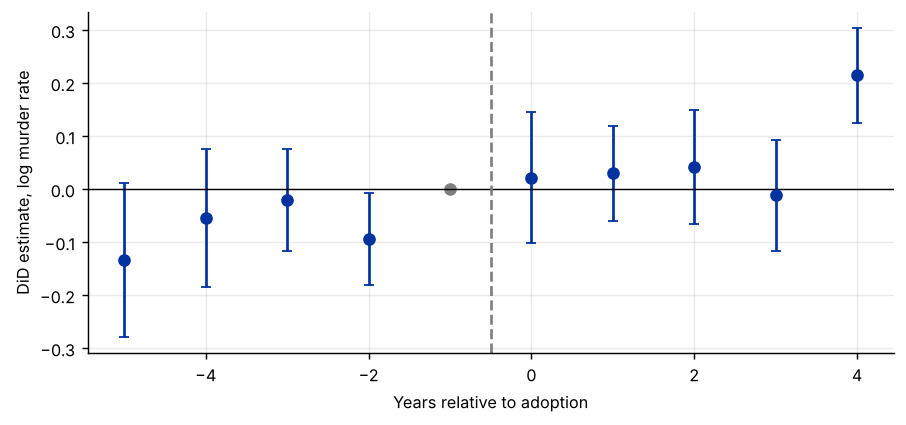
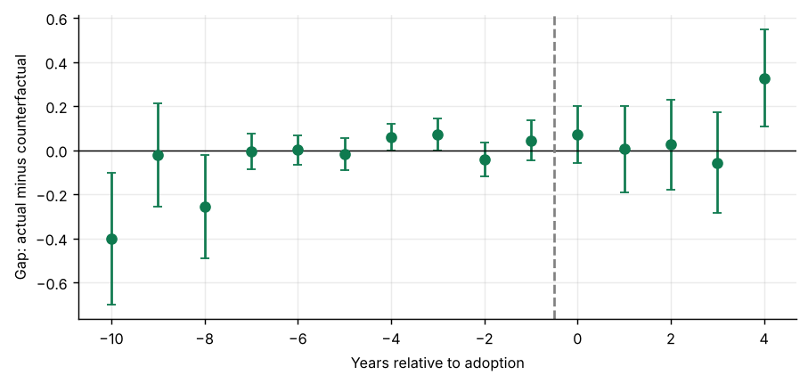

Step 1The question and why DiD fails here
The question: did stand-your-ground laws change the murder rate? The DiD guides used homicides from vital statistics; this guide uses the murder rate from police reports (FBI Uniform Crime Reports), in logs, for the same 50 states and the same laws. A second measure of the same outcome is a standard robustness check, and here it raises a problem the first measure did not.
The difference-in-differences model assumes that, without treatment, every state's outcome would have moved by the same amount each year. Generalized synthetic control relaxes that:
The \(f_t\) are a small number of unobserved common factors (for example, national trends in public-sector hiring or crime policy), and the loadings \(\lambda_i\) let each state respond to them differently. DiD is the special case with no factors. If treated states load more heavily on a rising factor, their outcome rises faster even without treatment, and DiD would wrongly attribute that to the law.
How the method works
- Estimate the factors from the never-treated states, which are untouched by the policy.
- For each treated state, estimate its loadings from its pre-treatment years only.
- Predict its untreated outcome after adoption, \(\hat Y_{it}(0)\), and take the gap \(Y_{it} - \hat Y_{it}(0)\) as the effect.
- Choose the number of factors by cross-validation: hold out each pre-treatment year in turn and see which number predicts it best.
How to write it: design
Because event-study estimates indicate that adopting and non-adopting states were on different trends before the laws took effect, we estimate the effect with the generalized synthetic control method of Xu (2017). It models untreated outcomes with state and year effects and a small number of latent factors with state-specific loadings, estimated from never-treated states, and imputes the counterfactual for each adopting state from its pre-adoption path. The number of factors is selected by cross-validation.
Step 2Load the data and test the pre-trends
import pandas as pd
import numpy as np
import matplotlib.pyplot as plt
from causal_tests import event_study, gsc # helper file: causal-inference-guide/examples/causal_tests.py
df = pd.read_csv("castle_murder.csv")
es = event_study(df, unit="state", time="year", y="l_murder", treat="castle_law")
ev = pd.DataFrame(es["event"])
fig, ax = plt.subplots()
ax.errorbar(ev["e"], ev["est"], yerr=1.96 * ev["se"], fmt="o", capsize=3)
ax.scatter([-1], [0], color="grey"); ax.axhline(0, color="black", lw=.8); ax.axvline(-0.5, color="grey", ls="--")
ax.set_xlabel("Years relative to adoption"); ax.set_ylabel("DiD estimate, log murder rate")
print(ev.round(4).to_string(index=False))
print(f"\nPre-trend test (leads -5 to -2): chi2({es['pretrend']['df']}) = {es['pretrend']['stat']:.2f}, p-value = {es['pretrend']['p']:.3f}")
print(f"DiD estimates: Callaway-Sant'Anna {es['att']['est']:.4f} ({es['att']['se']:.4f}), TWFE {es['twfe']['est']:.4f} ({es['twfe']['se']:.4f})")e est se -5 -0.1337 0.0743 -4 -0.0545 0.0662 -3 -0.0201 0.0489 -2 -0.0938 0.0446 0 0.0220 0.0633 1 0.0299 0.0454 2 0.0416 0.0546 3 -0.0117 0.0537 4 0.2146 0.0457 Pre-trend test (leads -5 to -2): chi2(4) = 11.27, p-value = 0.024 DiD estimates: Callaway-Sant'Anna 0.0251 (0.0405), TWFE 0.0928 (0.0557)

How to read it
The leads are not flat: the joint test rejects that they are zero at the 5% level. Before adopting a law, murder rates in the adopting states were already moving differently from those in the other states. Any DiD estimate here mixes that pre-existing difference in trends with the effect of the law, which is why the model selection tool sends this dataset to generalized synthetic control.
Step 3Choose the number of factors
res = gsc(df, unit="state", time="year", y="l_murder", treat="castle_law")
print("Cross-validated mean squared prediction error by number of factors:")
for r, mspe in res["cv"].items():
print(f" r = {r}: {mspe}")
print(f"Chosen: r = {res['r']}")Cross-validated mean squared prediction error by number of factors: r = 0: 0.05038 r = 1: 0.04571 r = 2: 0.05784 r = 3: 0.06724 r = 4: None Chosen: r = 1
How to read it
With zero factors the model is two-way fixed effects. Adding factors lets states follow different trends; too many factors overfit the short pre-treatment period. Cross-validation picks the number that best predicts held-out pre-treatment years of the treated states. A non-zero choice confirms that unit-specific trends matter, as the event study suggested.
Step 4Estimate the effect
print(f"ATT = {res['att']['est']:.4f} (bootstrap s.e. {res['att']['se']:.4f}), p-value = {res['att']['p']:.3f}")
g = pd.DataFrame(res["event"])
fig, ax = plt.subplots()
ax.errorbar(g["e"], g["est"], yerr=1.96 * g["se"], fmt="o", capsize=3, color="#0f7a4f")
ax.axhline(0, color="black", lw=.8); ax.axvline(-0.5, color="grey", ls="--")
ax.set_xlabel("Years relative to adoption"); ax.set_ylabel("Gap: actual minus counterfactual")
print(g.round(4).to_string(index=False))
print(f"\nRoot mean squared gap before adoption: {res['pre_rmspe']:.4f}")ATT = 0.0211 (bootstrap s.e. 0.0820), p-value = 0.797 e est se -10 -0.4023 0.1530 -9 -0.0233 0.1198 -8 -0.2554 0.1196 -7 -0.0062 0.0419 -6 0.0008 0.0333 -5 -0.0185 0.0375 -4 0.0589 0.0318 -3 0.0715 0.0377 -2 -0.0423 0.0393 -1 0.0431 0.0465 0 0.0710 0.0652 1 0.0054 0.0997 2 0.0246 0.1039 3 -0.0579 0.1165 4 0.3273 0.1126 Root mean squared gap before adoption: 0.1550

How to read it
- Before adoption, the gaps between each treated state and its counterfactual should be close to zero: they measure how well the model fits. In the five years before adoption they stay within about ±0.07, against DiD leads of up to −0.13 in the first step: the factor has absorbed most of the difference in trends. The gaps 8 to 10 years before adoption rest on the one or two states that adopted last and are noisy; they inflate the overall pre-treatment RMSE.
- After adoption, the gaps are the estimated effects. The average effect on the murder rate is small and not significant.
- Standard errors come from bootstrapping states (both treated and control), re-estimating everything each time.
Step 5Compare the estimators
print(f"{'':34s}{'ATT':>9s}{'s.e.':>9s}")
print(f"{'Two-way fixed effects':34s}{es['twfe']['est']:9.4f}{es['twfe']['se']:9.4f}")
print(f"{'Callaway-Sant Anna (base g-1)':34s}{es['att']['est']:9.4f}{es['att']['se']:9.4f}")
print(f"{'Generalized synthetic control':34s}{res['att']['est']:9.4f}{res['att']['se']:9.4f}")ATT s.e. Two-way fixed effects 0.0928 0.0557 Callaway-Sant Anna (base g-1) 0.0251 0.0405 Generalized synthetic control 0.0211 0.0820
How to read it
Two-way fixed effects suggests murder rose by about 9% (p ≈ 0.10). GSC and the Callaway–Sant'Anna estimator, which handle the pre-trend in different ways, both put the effect near 2% and far from significance. The TWFE estimate is the outlier: it averages over all pre-adoption years and so attributes the adopting states' different pre-trend to the law. Because the pre-trend test rejected parallel trends, the GSC estimate, whose counterfactual fits the pre-treatment years, is the one to lead with. Report all three: the comparison shows how much the conclusion depends on the treatment of trends.
Step 6Write the paper
How to write it: results
Event-study estimates reveal differential pre-trends in murder rates between adopting and non-adopting states (joint test of pre-adoption coefficients, p = 0.02), so difference-in-differences estimates are not credible for this outcome. Using the generalized synthetic control method with one latent factor selected by cross-validation, we find no significant effect of Castle Doctrine laws on the murder rate. The pre-adoption gaps between adopting states and their estimated counterfactuals are small, indicating a good fit.
Common mistakes
- Using GSC with very few pre-treatment periods. The loadings of each treated unit are estimated from its pre-treatment years; with fewer than about five, the counterfactual is unreliable.
- Using GSC with very few control units. The factors are estimated from them.
- Choosing the number of factors by looking at the post-treatment results. Fix it by cross-validation on pre-treatment data only.
- Forgetting to show the pre-treatment fit. It is the main evidence that the counterfactual is credible.
- In Stata or R, use
gsynth(Xu) orfect(Liu, Wang and Xu) for the full method with covariates and parametric bootstrap.